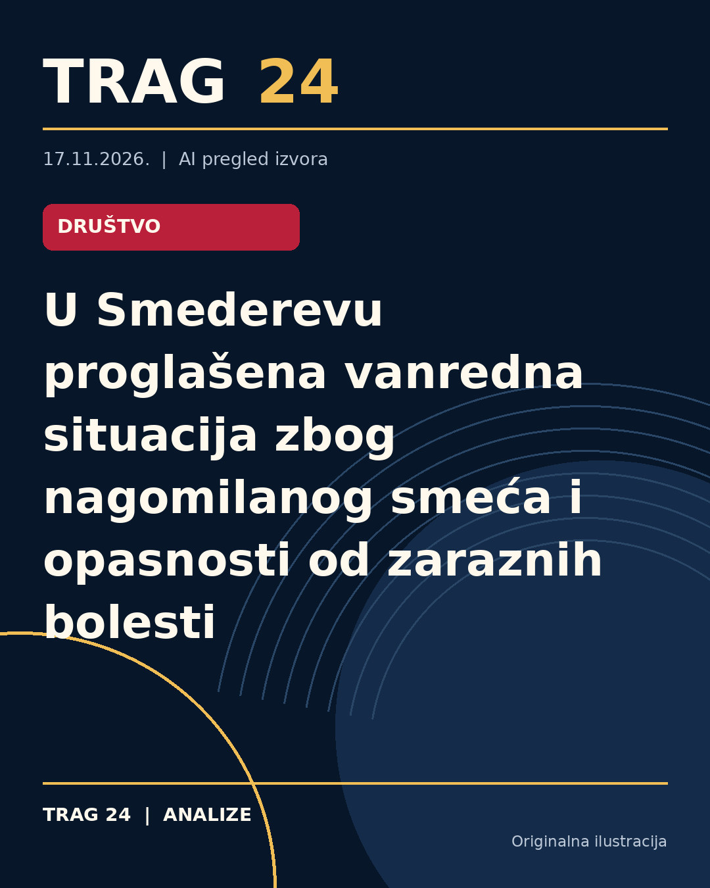

U Smederevu proglašena vanredna situacija zbog nagomilanog smeća i opasnosti od zaraznih bolesti

ŠTA SE DOGODILO
Gradski štab za vanredne situacije Smedereva doneo je odluku o proglašenju vanredne situacije na teritoriji grada zbog nemogućnosti sakupljanja, odvoženja i bezbednog odlaganja komunalnog otpada, što je izazvalo nagomilavanje smeća u gradu i povećanu opasnost od izbijanja i širenja zaraznih bolesti. Problemi su nastali nakon što su nadležni organi zabranili odvoz smeća na jedinu deponiju u Jelen Do u Radincu, zbog čega kontejneri na ulicama ostaju puni, a građani su primorani da smeće ostavljaju na ulicama pored kontejnera.
HRONOLOGIJA
Vanredna situacija proglašena je nakon vanrednog inspekcijskog nadzora Grupe za inspekciju za zaštitu životne sredine Odeljenja za inspekcijske poslove Gradske uprave Smederevo, koji je utvrdio da trenutna situacija predstavlja opasnost po život i zdravlje ljudi i životnu sredinu. Uz to, pre nekoliko dana uhapšeni su gradonačelnica, direktor JKP "Zelenilo i groblja" i načelnica Gradske uprave jer grad nema potrebne dozvole i dokumentaciju za korišćenje deponije u Radincu, koja se smatra divljom deponijom. Ranije je bilo najava da bi deo otpada mogao da se odvozi na Regionalnu deponiju u Pančevu, dok bi se veći deo selektovao u transfer stanici u Godominskom polju, koja je građevinski završena, ali nije zvanično puštena u rad.
ŠTA NAVODE IZVORI
Svi izvori navode da je vanredna situacija proglašena zbog gomilanja smeća i rizika po zdravlje stanovnika. Iz Grada Smedereva je saopšteno da se radi na hitnoj javnoj nabavci sanitarne deponije koja bi legalno primala otpad, a finansijsko obezbeđenje za ovu nabavku je povereno Odeljenju za finansije Gradske uprave. JKP "Zelenilo i groblja" dužno je da nadzire skladištenje otpada. Takođe, Gradski štab će pratiti razvoj situacije i redovno obaveštavati javnost. Izveštaji detaljno opisuju da je postojeća deponija u Radincu nelegalna, bez neophodne dokumentacije i dozvola, što je izazvalo trenutnu krizu.
ŠTA JE POTVRĐENO
Potvrđeno je da su kontejneri i ulice grada Smedereva zatrpani smećem zbog prestanka odvoza komunalnog otpada na legalnu deponiju. Postoji i potvrda hapšenja odgovornih osoba iz gradske uprave i javnog komunalnog preduzeća zbog nelegalnog odlaganja otpada. Takođe, potvrđene su mere koje su preduzete — hitna javna nabavka sanitarne deponije i finansijsko obezbeđenje za rešavanje problema. Vanredna situacija je zvanično proglašena prema Zakonu o smanjenju rizika od katastrofa i upravljanju vanrednim situacijama.
ŠTA NIJE POTVRĐENO
Nije poznato kada će nova sanitarna deponija početi sa radom ili koliko će trajati rešavanje problema sa nagomilanim smećem. Nisu potvrđeni konkretni rokovi za uspostavljanje transfer stanice u Godominskom polju ili eventualni detalji oko dela otpada koji bi mogao biti odvožen na Regionalnu deponiju u Pančevu. Takođe, iz dostupnih informacija ne proizlazi kakve tačno sankcije će biti preduzete protiv odgovornih osoba niti koji su dugoročni planovi Grada za upravljanje otpadom.
ŠTA OSTАJE OTVORENO: Nastavlja se praćenje situacije i očekuje se da Gradski štab blagovremeno informiše javnost o daljim koracima i rezultatima preduzetih mera. Ostaje otvoreno pitanje uspostavljanja zakonski urednog sistema za upravljanje komunalnim otpadom u Smederevu, uključujući izgradnju i opremanje sanitarnih deponija i transfer stanica. Takođe, nije jasno na koji način će se trajno rešiti problem upravljanja otpadom kako bi se sprečila ponovna pojava nagomilanog smeća i zaštitilo zdravlje građana i životna sredina.
Izvori
- https://www.blic.rs/vesti/drustvo/vanredna-situacija-proglasena-u-smederevu-zbog-nagomilanog-smeca/lk3nq3t
- https://www.danas.rs/vesti/drustvo/smederevo-vanredna-situacija-smece/
- https://www.novosti.rs/srbija/vesti/1672047/proglasena-vanredna-situacija-smederevu-opasnost-sirenja-zaraze-zbog-neodvozenja-otpada-grada
Ova analiza je pripremljena uz pomoć veštačke inteligencije na osnovu javno dostupnih izvora. Navodi izvora nisu nužno nezavisno potvrđeni.